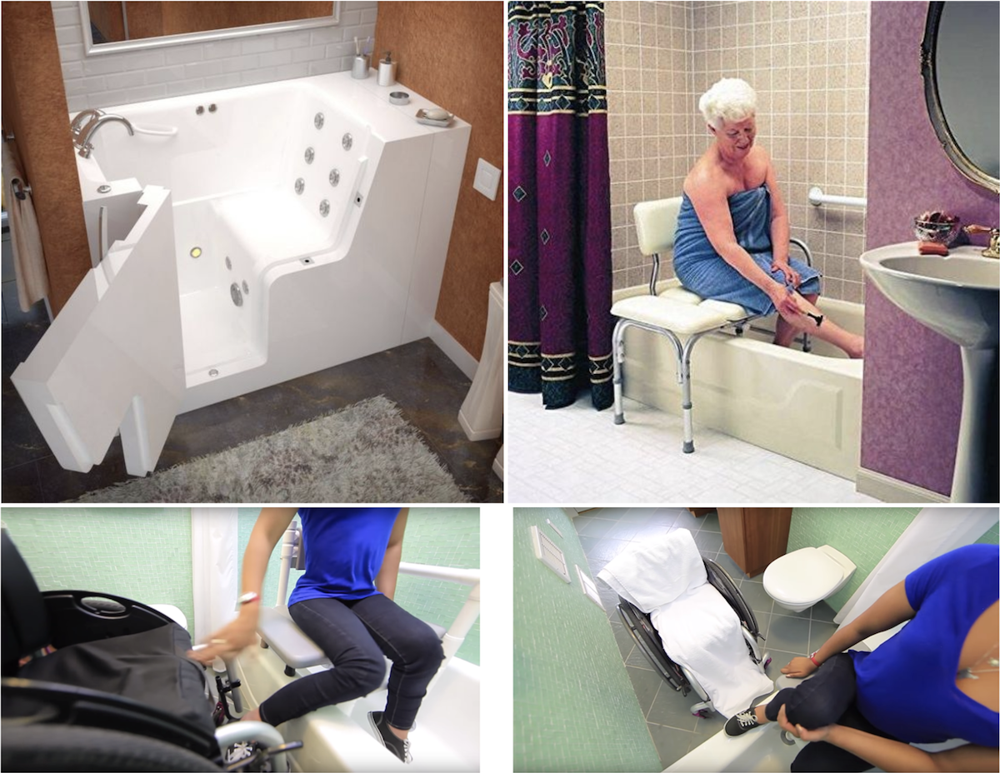
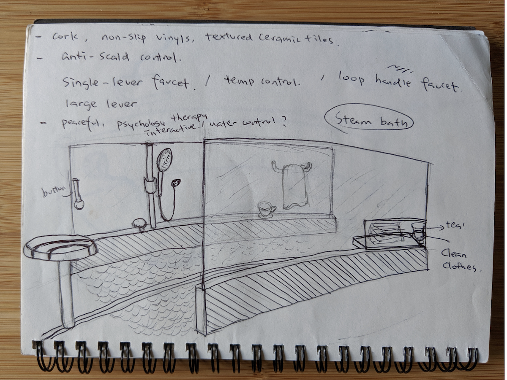
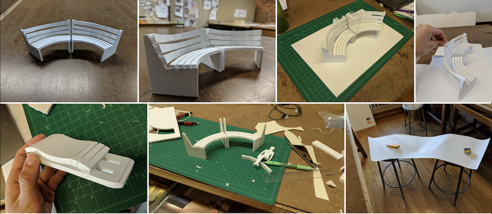
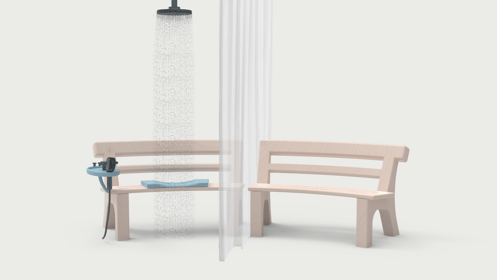
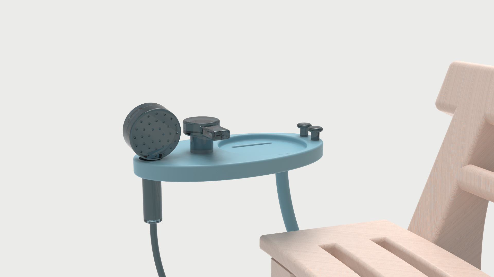

Accesible Shower Unit

Intro & Research
More than one in three seniors over age 65 fall each year, and 80 percent of these falls happen in the bathroom according to the National Institute on Aging. The falls can lead to severe consequences like a hip fracture that potentially causes loss of independence. The goal of this design is to provide a cozy and warm shower experience for people who are concerned about bathroom falls and the design can allow wheelchair users to perform the shower task independently.
Current accessible bathroom designs didn't consider the process of users getting out of the shower and getting dressed up, which is at a big risk of falling. Aging populations are also more sensitive to the coldness that getting undressed and dressed up after the shower can be an unpleasant experience.
It is especially inconvenient for wheelchair users to use the shower that they need to park the wheelchair by the bathtub, then put a towel onto the wheelchair to sit on after finishing the shower.
Current accessible bathroom designs didn't consider the process of users getting out of the shower and getting dressed up, which is at a big risk of falling. Aging populations are also more sensitive to the coldness that getting undressed and dressed up after the shower can be an unpleasant experience.
It is especially inconvenient for wheelchair users to use the shower that they need to park the wheelchair by the bathtub, then put a towel onto the wheelchair to sit on after finishing the shower.

Ideas
I thought of the idea of a heated long bench with a dry area and a wet area. The user can first get undressed in the dry area, then move to the wet area to shower, then move back to the dry area to moisturize the skin and get dressed up. The whole shower process can be completed in the seated position.



Design
The design contains a long bench with heating function, a rain shower, a handheld shower, a shower curtain for separating the wet area and dry area on the bench, and an add-on seat that can slide on the bench for people with more mobility issues.


